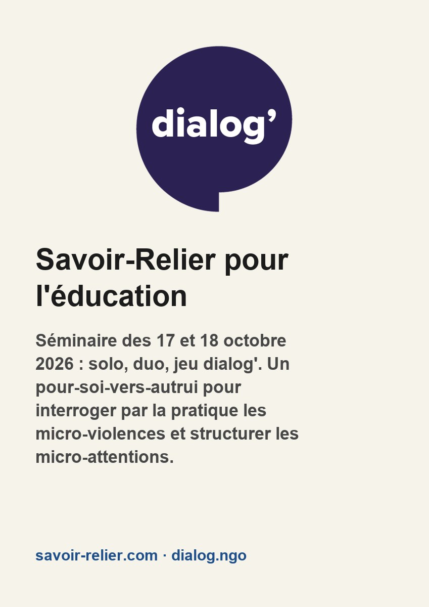
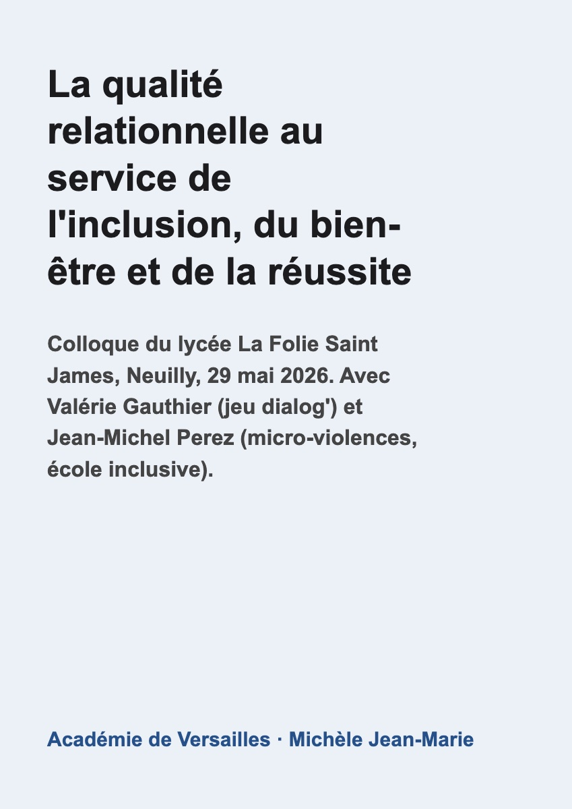

Savoir-relier & micro-attentions
Savoir-relier
21 oct. 2026 · sur LinkedIn ↗
Savoir-relier et micro-violences
Un week-end en séminaire du « Savoir-Relier pour l’éducation ». Un grand merci à Nadine et Bernard pour leur accueil.
- Le Savoir-Relier, relève d'un agir outillé sous-tendue par une réflexion épistémologique rare qui intéresse les recherches sur les pratiques éducatives dans leur rapport aux micro-violences. Il opérationalise 1 chemin de discussion « avec soi-même » avant qu’il ne soit « avec les autres » : un rapport de "soi à soi," et de "soi pour autrui… un « pour-soi-vers-autrui ».
- Il s’incarne :
-dans un solo ;
- puis un duo : une heure trente d’écoute, sans jugement ;
... - et, transversalement, dans le jeu dialog’ : l’attention et l’écoute centrées sur la perception et la réception des émotions ressenties, individuellement et en groupe.
La génèse : une rencontre avec Valérie Gauthier et Anne-Laure Sellier, au colloque « La qualité relationnelle au service de l’inclusion, du bien-être et de la réussite » (Neuilly, mai 2026) : cette approche m'est apparue comme un point d'appui pour interroger la pratique les micro-violences par cet espace de structuration propice au développement des micro-attentions.
En effet, dans dialog’, des jetons circulent. Élèves, enseignants, chercheurs en posent : un « à qui coupe la parole », un « à qui juge »… Deux gestes que tout le monde fait, que chacun dit ne pas faire… mais que personne (jusqu'à présent) ne compte.
- Le jeu rend visibles ces gestes qui passent inaperçus : le maître coupe la parole à l’élève tout en lui demandant d’écouter. En effet, les micro-violences débutent là, là où l’institution met l’un en position haute et l’autre en position basse. La dissymétrie n’est pas le problème ; le problème, c’est ce qu’elle autorise sans contrôle… quand la position organisationnelle se confond avec une position de pouvoir.
La pratique de dialog’ interroge ces gestes en acte, dans un cadre sécurisant, et permet de conscientiser les structures de pouvoir -par lesquelles nous sommes traversés : et de
conscientiser les écarts/ alignements, entre ce que l’on dit et ce que l’on fait.
* D’où une question pour les sciences de l’éducation et de la formation : "que deviennent les gestes professionnels quand on les met à l’épreuve d’un jeu réglé qui déplace le rapport de pouvoir"… et qui donne ux élèves comme aux enseignants -sans en avoir l'air- une place pour parler et agir ?
Merci à Valérie Gauthier, Nadine Gaudin, Bernard Gaudin, Géraldine Suau, Géraldine Brimaud, Florence Imokrane, Cyril Desouches, Alexandra Archimbaud, Lola Kerc, Mazarine Perez-Suau.
Séminaire et colloque

Séminaire Savoir-Relier pour l'éducation17-18 oct. 2026 · solo, duo, jeu dialog'

La qualité relationnelle au service de l'inclusion, du bien-être et de la réussite29 mai 2026 · Lycée La Folie Saint James, Neuilly
Le jeu dialog'dialog.ngo
Micro-attentions
Témoignages de micro-attentions →
- 23 oct. 2026Micro-attentions : donner envie d'avoir envie
- 8 août 20263 récits de micro-attentions scolaires
- 7 août 20264 récits de micro-attentions scolaires : ce que nous disent celles et ceux qui en sont revenus
- 3 août 20264 récits de micro-attentions scolaires : ce que nous en disent ceux qui en sont revenus
- 23 avr. 2026Micro-violences : introduire au débat
- 21 avr. 2026Repenser à partir de l’isolement institutionnalisé — Des micro-violences éducatives à la reliance scolaire
- 19 avr. 2026Et si l'isolement à l'école était la racine de maux bien plus profonds ?
- 31 mars 2026Des micro-violences aux micro-attentions : Une orchidée dans une BU (Épisode 3/3 Construire & institutionnaliser)
- 28 mars 2026Des micro-violences aux micro-attentions : Une orchidée dans une BU (Épisode 2/3 Relier & habiter)
- 27 mars 2026Des micro-violences aux micro-attentions : Une orchidée dans une BU (Épisode 1/3 Reconnaître & agir)